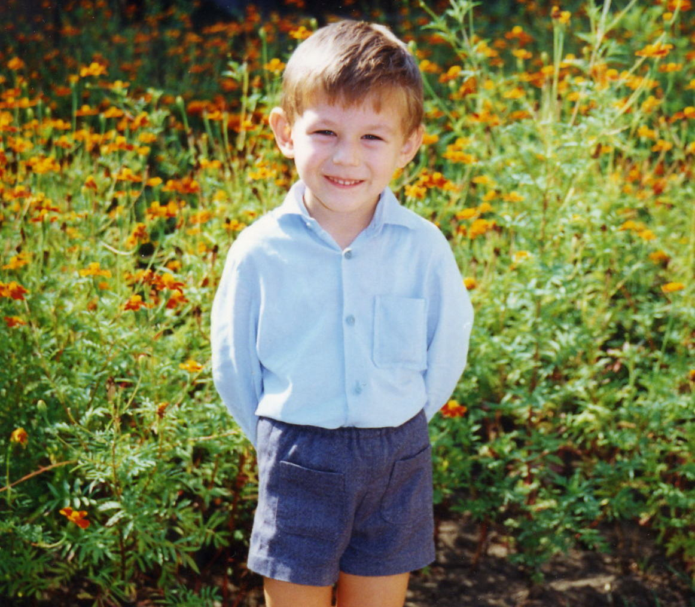

Резюме
Андрей Синявский

31 марта 1991 г.
г. Кривой Рог
sinerda@gmail.com
instagram.com/dre.yavs/
+380678321091
НАВЫКИ
ОБРАЗОВАНИЕ
Криворожский технический университет
Программное обеспечение автоматизированных систем
2008-2013 гг.
ОПЫТ РАБОТЫ
-
Криворожский технический университет
Инженер по ремонту компьютеров
2013-2015 гг.
-
Фриланс
Фронтенд разработчик
2015-2020